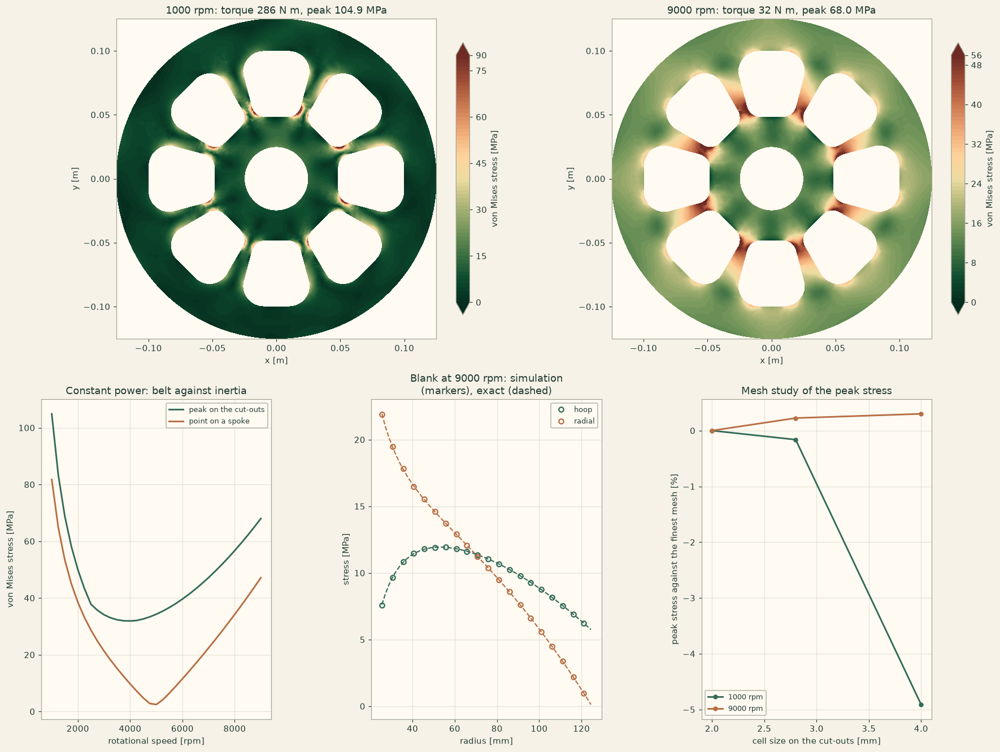
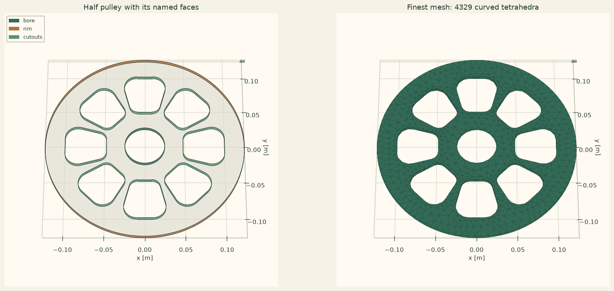

Docs › Examples › Stresses in a rotating pulley
Linear elasticity · 3D
Stresses in a rotating pulley
A spoked belt pulley at constant power: how belt pull and centrifugal load trade off between low and high speed.

What it computes
Half of the pulley is read from a STEP file with named faces and meshed with curved quadratic tetrahedra. OneSimulation solves elasticity with the capstan belt load over the contact arc and the centrifugal body force, sweeps the speed by superposition, and compares the rim displacement with cell-centred finite volumes. The script that builds the STEP files comes with the notebook.
What it checks
The shaft reaction balances the belt forces to 0.04 % (5466.3 against 5464.2 N at 1000 rpm), the plain disc matches Timoshenko's rotating-disc solution to 0.5 %, the peak stress changes by 0.2 % between the two finest meshes, and finite volumes agree with finite elements to 0.5 % at the rim.
Geometry
The notebook starts at the import of the CAD files rotating_pulley_stresses.step, rotating_pulley_stresses_blank.step: STEP (AP242), readable by any CAD program, with the names of the faces that the boundary conditions use. Put them next to the notebook.

The geometry script
The script rotating_pulley_stresses_geometry.py builds the geometry with the CAD objects of OneSimulation and writes the files. Change a dimension there, run it, and run the notebook again.
"""Geometry of the OneSimulation example "Stresses in a rotating pulley".
Builds the spoked pulley (outer radius 125 mm, bore radius 25 mm, eight rounded trapezoidal
cut-outs) with the CAD objects of OneSimulation and writes rotating_pulley_stresses.step. The file
holds the half of the 10 mm plate above its mid-plane and names the faces bore, rim, cutouts and
midplane. The pulley blank without cut-outs goes to rotating_pulley_stresses_blank.step.
"""
import numpy as np
from onesim.cad.d2 import Profile
from onesim.cad.d3 import Cylinder, Prism
mm = 1e-3
outer_radius, bore_radius, half_thickness = 125 * mm, 25 * mm, 5 * mm
inner_edge, outer_edge, inner_fillet, outer_fillet = 48 * mm, 100 * mm, 11 * mm, 16 * mm
inner_half_width, outer_half_width = 17.18 * mm, 30.96 * mm
corners = [(inner_half_width, inner_edge), (outer_half_width, outer_edge), (-outer_half_width, outer_edge), (-inner_half_width, inner_edge)]
cutout = Prism(profile=Profile.rounded_polygon(corners, (inner_fillet, outer_fillet, outer_fillet, inner_fillet)),
height=3 * half_thickness, origin=(0, 0, -half_thickness))
shaft = Cylinder(radius=bore_radius, length=3 * half_thickness, origin=(0, 0, -half_thickness)).named("shaft")
blank = Cylinder(radius=outer_radius, length=half_thickness) - shaft
pulley = blank
for k in range(8):
pulley = pulley - cutout.rotated((0, 0, 1), k * np.pi / 4).named("window")
faces = blank.boundaries
blank = blank.grouped(bore=faces["shaft.outer_wall"], rim=faces.outer_wall, midplane=faces.bottom)
faces = pulley.boundaries
pulley = pulley.grouped(bore=faces["shaft.outer_wall"], rim=faces.outer_wall, midplane=faces.bottom, cutouts=faces["window.side"])
pulley.save("rotating_pulley_stresses.step")
blank.save("rotating_pulley_stresses_blank.step")The notebook
The complete notebook, cell by cell. Run it to produce the figures and the comparison printout.
A driving pulley of outer radius \(R=125\) mm sits on a shaft (bore radius 25 mm) and drives a flat belt that wraps it over the angle \(\beta=170^\circ\). Eight rounded, trapezoidal cut-outs leave a hub, eight tapered spokes and a rim. The shaft power \(P\) is constant, so the torque \(M=P/\omega\) falls as the speed rises, while the centrifugal load grows with \(\omega^2\): at low speed the belt dominates, at high speed the inertia does.
Belt load. With friction coefficient \(\mu\) and impending slip, the strand tensions obey the capstan relation \(F_1/F_2=e^{\mu\beta}\) and \(F_1-F_2=M/R\). Along the contact, measured by the angle \(\theta\) from the point where the slack strand leaves, the belt presses on the rim with
Inertia. In the rotating frame every material point carries the centrifugal body force \(\rho\,\omega^2\,\mathbf r\).
The pulley comes from the CAD file rotating_pulley_stresses.step: the half of the 10 mm plate above its mid-plane, with the named faces bore, rim, cutouts and midplane. The pulley blank without cut-outs is in rotating_pulley_stresses_blank.step. The script rotating_pulley_stresses_geometry.py builds both with the CAD objects of OneSimulation.
| face | condition | |---|---| | bore | held in the plane, \(u_x=u_y=0\) | | midplane | symmetry, \(u_z=0\) | | rim | belt traction over the wrap angle, free elsewhere | | every other face | traction free |
Reference. There is no closed-form solution for the spoked pulley. The notebook uses (i) global equilibrium: the shaft reaction must balance the two strand forces, (ii) the exact plane-stress solution of a rotating annular disc held at the bore (Timoshenko & Goodier, Theory of Elasticity, Sec. 32) on the pulley blank, (iii) a three-level mesh study of the peak stress and (iv) a cell-centred finite-volume solution of the same problem.
import numpy as np
from onesim.cad.d2 import Plane
from onesim.cad.exchange import load
from onesim.materials import IsotropicSolid
from onesim.meshing import LocalRefinement, TetrahedralMesher
from onesim.numerics import Numerics
from onesim.numerics.fem import FiniteElement, Lagrange
from onesim.numerics.fvm import BoundaryLeastSquaresGradient, CentralElasticStress, FiniteVolume
from onesim.numerics.linear import SparseDirect
from onesim.physics.solid_mechanics import (BodyForce, FixedDisplacement, FixedDisplacementComponents, LinearElasticity, Traction,
TractionFree)
from onesim.results.comparisons import convergence
from onesim.results.derived import CylindricalFrame, frame_field, von_mises
from onesim.simulation import Problem, Simulation
from onesim.visualization import theme, plots
theme.set()Geometry and mesh
load returns the solid with its faces; the named groups of the file are available as pulley.boundaries. Three meshes of curved quadratic tetrahedra differ in the cell size on the walls of the cut-outs, where the rounded corners carry the peak stress.
pulley = load("rotating_pulley_stresses.step")
faces = pulley.boundaries
outer_radius, thickness = pulley.size[0] / 2, 2 * pulley.size[2]
sizes = [0.0040, 0.0028, 0.0020]
meshes = [TetrahedralMesher(target_size=0.008, geometry_order=2,
refinements=(LocalRefinement(region=faces.cutouts, target_size=size),)).generate(pulley) for size in sizes]
view = plots.Camera(elevation=62, azimuth=-90)
fig = plots.figure(1, 2, size=(15, 6.5))
plots.geometry(pulley, selection={"bore": faces.bore, "rim": faces.rim, "cutouts": faces.cutouts}, labels=False,
camera=view, title="Half pulley with its named faces", ax=fig[0])
plots.mesh(meshes[-1], groups=("all",), legend=False, camera=view,
title=f"Finest mesh: {meshes[-1].cell_count} curved tetrahedra", ax=fig[1])
plots.show()Model
Aluminium. Both loads depend on the speed: the centrifugal body force grows with \(\omega^2\), the belt traction falls with the torque \(P/\omega\). The problem is solved at 1000 and 9000 rpm on the three meshes.
power, friction, wrap, speeds, bore_radius = 30e3, 0.3, np.radians(170.0), (1000.0, 9000.0), 0.025
aluminium = IsotropicSolid(density=2700.0, specific_heat_capacity=900.0, thermal_conductivity=200.0,
youngs_modulus=70e9, poisson_ratio=0.33, thermal_expansion_coefficient=23e-6)
angular = lambda rpm: 2 * np.pi * rpm / 60
slack_force = lambda rpm: power / angular(rpm) / outer_radius / (np.exp(friction * wrap) - 1)
def loads(rpm):
"""Centrifugal body force and belt traction on the rim at the speed `rpm`."""
body = lambda x, y, z: aluminium.density * angular(rpm) ** 2 * np.stack((x, y, 0 * z), axis=-1)
def traction(x, y, z):
angle = np.arctan2(y, x)
pressure = np.where(np.abs(angle) < wrap / 2,
slack_force(rpm) / (outer_radius * thickness) * np.exp(friction * (angle + wrap / 2)), 0.0)
return np.stack((-pressure * (np.cos(angle) + friction * np.sin(angle)),
-pressure * (np.sin(angle) - friction * np.cos(angle)), 0 * z), axis=-1)
return body, traction
models = {rpm: LinearElasticity(domain=pulley.volume, material=aluminium, loading=BodyForce(value=loads(rpm)[0])) for rpm in speeds}
problems = {rpm: Problem(name="Pulley", geometry=pulley, physics=(model,), boundary_conditions=(
FixedDisplacementComponents(boundary=faces.bore, physics=model, components=("x", "y")),
FixedDisplacementComponents(boundary=faces.midplane, physics=model, components=("z",)),
Traction(boundary=faces.rim, physics=model, value=loads(rpm)[1]),
TractionFree(boundary=faces.all - faces.bore - faces.midplane - faces.rim, physics=model)))
for rpm, model in models.items()}
numerics = Numerics(spatial=FiniteElement(element=Lagrange(order=2)), linear_solver=SparseDirect())
results = {(rpm, size): Simulation(problem=problems[rpm], mesh=mesh, numerics=numerics).solve_stationary()
for rpm in speeds for size, mesh in zip(sizes, meshes)}
stress = {rpm: results[rpm, sizes[-1]].field(models[rpm].stress) for rpm in speeds}
mises = {rpm: results[rpm, sizes[-1]].field(models[rpm].von_mises_stress) for rpm in speeds}
displacement = {rpm: results[rpm, sizes[-1]].field(models[rpm].displacement) for rpm in speeds}Global equilibrium and mesh study
The reaction of the shaft on the bore must balance the two strand forces \(F_1\mathbf t_1+F_2\mathbf t_2\); the model holds half the thickness, so its reaction counts twice. The belt load starts and ends inside cell faces, which limits how closely the two agree. The peak von Mises stress sits on the walls of the cut-outs.
for rpm in speeds:
tight, slack = slack_force(rpm) * np.exp(friction * wrap), slack_force(rpm)
belt = tight * np.array([-np.sin(wrap / 2), np.cos(wrap / 2)]) + slack * np.array([-np.sin(wrap / 2), -np.cos(wrap / 2)])
reaction = 2 * displacement[rpm].reaction(faces.bore)
print(f"{rpm:5.0f} rpm: torque {power / angular(rpm):6.1f} N m, strand forces {tight:6.1f} and {slack:5.1f} N; "
f"shaft reaction ({reaction[0]:8.2f}, {reaction[1]:7.2f}) N against ({-belt[0]:8.2f}, {-belt[1]:7.2f}) N")
peaks = {rpm: [results[rpm, size].field(models[rpm].von_mises_stress).sample(along=faces.cutouts, subdivisions=3).values.max()
for size in sizes] for rpm in speeds}
studies = {rpm: convergence(peaks[rpm], sizes) for rpm in speeds}
print("cell size on the cut-outs [mm] tetrahedra peak von Mises stress [MPa] at 1000 / 9000 rpm")
for index, (size, mesh) in enumerate(zip(sizes, meshes)):
print(f"{1e3 * size:29.1f} {mesh.cell_count:12d} {peaks[speeds[0]][index] / 1e6:21.2f} / {peaks[speeds[1]][index] / 1e6:.2f}")
for rpm in speeds:
print(f"{rpm:5.0f} rpm: change between the two finest meshes {100 * studies[rpm].change:.2f} %")Speed sweep
The problem is linear, so the stress at any speed is a combination of the two solved states: one part grows with \(\omega^2\), the other with \(P/\omega\). von_mises evaluates the combined tensors on the walls of the cut-outs and at a point on a spoke.
sweep = np.arange(1000.0, 9001.0, 250.0)
weights = np.linalg.inv([[angular(rpm) ** 2, power / angular(rpm)] for rpm in speeds])
probe = [[0.019, 0.054, thickness / 4]]
on_walls = np.stack([stress[rpm].sample(along=faces.cutouts, subdivisions=3).values for rpm in speeds])
at_probe = np.stack([stress[rpm].evaluate(probe) for rpm in speeds])
combined = lambda states, rpm: np.tensordot(np.array([angular(rpm) ** 2, power / angular(rpm)]) @ weights, states, axes=1)
sweep_peak = np.array([von_mises(combined(on_walls, rpm)).max() for rpm in sweep])
sweep_probe = np.array([von_mises(combined(at_probe, rpm))[0] for rpm in sweep])
print(f"lowest peak stress {sweep_peak.min() / 1e6:.1f} MPa at {sweep[sweep_peak.argmin()]:.0f} rpm")Rotating disc and finite volumes
The pulley blank at 9000 rpm without belt is compared with the exact solution of the rotating annular disc held at the bore; frame_field gives the radial and hoop stress. As a second discretisation, cell-centred finite volumes and linear finite elements solve the spoked pulley at 9000 rpm on one mesh of straight tetrahedra; there the bore is clamped and the mid-plane is a free face, which leaves the in-plane state of the thin plate unchanged.
blank = load("rotating_pulley_stresses_blank.step")
disc = LinearElasticity(domain=blank.volume, material=aluminium, loading=BodyForce(value=loads(speeds[1])[0]))
disc_problem = Problem(name="Pulley blank", geometry=blank, physics=(disc,), boundary_conditions=(
FixedDisplacementComponents(boundary=blank.boundaries.bore, physics=disc, components=("x", "y")),
FixedDisplacementComponents(boundary=blank.boundaries.midplane, physics=disc, components=("z",)),
TractionFree(boundary=blank.boundaries.all - blank.boundaries.bore - blank.boundaries.midplane, physics=disc)))
disc_mesh = TetrahedralMesher(target_size=0.006, geometry_order=2,
refinements=(LocalRefinement(region=blank.boundaries.bore, target_size=0.002),)).generate(blank)
disc_stress = frame_field(Simulation(problem=disc_problem, mesh=disc_mesh, numerics=numerics).solve_stationary().field(disc.stress),
CylindricalFrame(axis=(0, 0, 1), origin=(0, 0, 0)))
def rotating_disc(r, speed, a=bore_radius, b=outer_radius):
"""Radial and hoop stress of a rotating annular disc held at the bore radius a, free at b (plane stress)."""
E, nu = aluminium.youngs_modulus, aluminium.poisson_ratio
k, c = (1 - nu**2) * aluminium.density * speed**2 / (8 * E), E / (1 - nu**2)
C1, C2 = np.linalg.solve([[a, 1 / a], [c * (1 + nu), -c * (1 - nu) / b**2]], [k * a**3, c * k * (3 + nu) * b**2])
return (c * (-k * (3 + nu) * r**2 + C1 * (1 + nu) - C2 * (1 - nu) / r**2),
c * (-k * (1 + 3 * nu) * r**2 + C1 * (1 + nu) + C2 * (1 - nu) / r**2))
r = np.linspace(bore_radius + 5e-4, outer_radius - 5e-4, 60)
ray = np.column_stack((r * np.cos(0.35), r * np.sin(0.35), np.full_like(r, thickness / 4)))
radial, hoop = disc_stress.evaluate(ray)[:, 0], disc_stress.evaluate(ray)[:, 1]
exact_radial, exact_hoop = rotating_disc(r, angular(speeds[1]))
print(f"rotating disc at 9000 rpm, {disc_mesh.cell_count} tetrahedra: hoop stress near the bore {hoop[0] / 1e6:.3f} MPa "
f"(exact {exact_hoop[0] / 1e6:.3f}), near the rim {hoop[-1] / 1e6:.3f} MPa (exact {exact_hoop[-1] / 1e6:.3f}); "
f"largest deviation along the radius {100 * max(np.abs(hoop - exact_hoop).max(), np.abs(radial - exact_radial).max()) / exact_hoop.max():.2f} % of the peak")
clamped = Problem(name="Pulley with clamped bore", geometry=pulley, physics=(models[speeds[1]],), boundary_conditions=(
FixedDisplacement(boundary=faces.bore, physics=models[speeds[1]], value=(0.0, 0.0, 0.0)),
Traction(boundary=faces.rim, physics=models[speeds[1]], value=loads(speeds[1])[1]),
TractionFree(boundary=faces.all - faces.bore - faces.rim, physics=models[speeds[1]])))
straight_mesh = TetrahedralMesher(target_size=0.004, refinements=(LocalRefinement(region=faces.cutouts, target_size=0.002),)).generate(pulley)
methods = {"finite volumes": FiniteVolume(gradient=BoundaryLeastSquaresGradient(), diffusion=CentralElasticStress()),
"linear finite elements": FiniteElement(element=Lagrange(order=1))}
rim_top = [[0.0, outer_radius - 1e-3, thickness / 4]]
print(f"radial displacement of the rim at 9000 rpm: quadratic finite elements {1e6 * displacement[speeds[1]].evaluate(rim_top)[0, 1]:.2f} µm; "
f"on {straight_mesh.cell_count} straight tetrahedra with the bore clamped: " + ", ".join(
f"{name} {1e6 * Simulation(problem=clamped, mesh=straight_mesh, numerics=Numerics(spatial=method, linear_solver=SparseDirect())).solve_stationary().field(models[speeds[1]].displacement).evaluate(rim_top)[0, 1]:.2f} µm"
for name, method in methods.items()))Figure
The von Mises stress in the plate at both speeds, the speed sweep, the rotating disc against its exact solution and the mesh study.
megapascal = lambda s, position: s / 1e6
cut = Plane(origin=(0, 0, thickness / 4), normal=(0, 0, 1))
fig = plots.figure(layout=[["low"] * 3 + ["high"] * 3, ["sweep", "sweep", "disc", "disc", "study", "study"]], size=(16, 12))
for panel, rpm in zip(("low", "high"), speeds):
plots.section(mises[rpm], plane=cut, component=megapascal, limits=(0, 10 * round(0.075 * peaks[rpm][-1] / 1e6)), subdivisions=3,
label="von Mises stress [MPa]", xlabel="x [m]", ylabel="y [m]",
title=f"{rpm:.0f} rpm: torque {power / angular(rpm):.0f} N m, peak {peaks[rpm][-1] / 1e6:.1f} MPa", ax=fig[panel])
plots.line(sweep, {"peak on the cut-outs": sweep_peak / 1e6, "point on a spoke": sweep_probe / 1e6},
xlabel="rotational speed [rpm]", ylabel="von Mises stress [MPa]", title="Constant power: belt against inertia",
ax=fig["sweep"])
plots.line(points={"hoop": (1e3 * r[::3], hoop[::3] / 1e6), "radial": (1e3 * r[::3], radial[::3] / 1e6)},
reference={"hoop": (1e3 * r, exact_hoop / 1e6), "radial": (1e3 * r, exact_radial / 1e6)},
xlabel="radius [mm]", ylabel="stress [MPa]", title="Blank at 9000 rpm: simulation (markers), exact (dashed)",
ax=fig["disc"])
plots.line(1e3 * np.array(sizes), {f"{rpm:.0f} rpm": 100 * (np.array(peaks[rpm]) / peaks[rpm][-1] - 1) for rpm in speeds},
markers=True, xlabel="cell size on the cut-outs [mm]", ylabel="peak stress against the finest mesh [%]",
title="Mesh study of the peak stress", ax=fig["study"])
plots.show()Going further
Change the cut-outs or their corner radii in rotating_pulley_stresses_geometry.py, write the STEP files again and follow the peak stress; raise the friction coefficient or the wrap angle to see the belt load move; or give the pulley a second material for the hub.